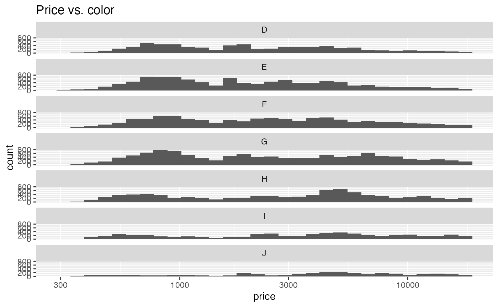

Accelerating tidy list-column workflows with collateral
James Goldie
2020-05-24
Source:vignettes/collateral.Rmd
collateral.RmdThe purrr package has a comprehensive set of tools for working with lists and vectors, and especially for iterating operations and analyses with its map(). This style of iteration is particularly powerful when used with the tibble package, because—unlike regular data frames—tibbles allow you to use lists as data frame columns as well as vectors. That means that complex objects, including models, plots and even other data frames can be stored inside a data frame list-column alongside other data.
The biggest downside of being able to do complex analysis on many list elements is that one little error can bring a lot of computation down. Another is that a warning or other message might get lost: if the 37th statistical model you fit of 45 has a problem, are you going to catch it?
purrr comes with tools for dealing with errors, warnings and other “side effects”, but it’s difficult to pair them effectively with purrr’s massively powerful iteration tools. And that’s where collateral comes in: it gives you ways to drop-in replacements for map() that use employ these side-effect capturing tools, as well as an array of other helpers to make navigating everything you’ve captured more pleasant.
Basic exploratory analysis
The aim of this vignette isn’t just to get you acquainted with collateral’s tools: it’s also to demonstrate the value of a tidy list-column workflow. We’ll be using the diamonds dataset, which comes with the ggplot2 package. Let’s take a look:
library(tidyverse)
#> -- Attaching packages ------------------------------------- tidyverse 1.2.1 --
#> v ggplot2 3.3.0 v purrr 0.3.3
#> v tibble 3.0.0 v dplyr 0.8.99.9002
#> v tidyr 1.0.2 v stringr 1.4.0
#> v readr 1.3.1 v forcats 0.5.0
#> Warning: package 'tibble' was built under R version 3.6.3
#> Warning: package 'tidyr' was built under R version 3.6.3
#> Warning: package 'purrr' was built under R version 3.6.3
#> Warning: package 'forcats' was built under R version 3.6.3
#> -- Conflicts ---------------------------------------- tidyverse_conflicts() --
#> x dplyr::filter() masks stats::filter()
#> x dplyr::lag() masks stats::lag()
diamonds
#> # A tibble: 53,940 x 10
#> carat cut color clarity depth table price x y z
#> <dbl> <ord> <ord> <ord> <dbl> <dbl> <int> <dbl> <dbl> <dbl>
#> 1 0.23 Ideal E SI2 61.5 55 326 3.95 3.98 2.43
#> 2 0.21 Premium E SI1 59.8 61 326 3.89 3.84 2.31
#> 3 0.23 Good E VS1 56.9 65 327 4.05 4.07 2.31
#> 4 0.290 Premium I VS2 62.4 58 334 4.2 4.23 2.63
#> 5 0.31 Good J SI2 63.3 58 335 4.34 4.35 2.75
#> 6 0.24 Very Good J VVS2 62.8 57 336 3.94 3.96 2.48
#> 7 0.24 Very Good I VVS1 62.3 57 336 3.95 3.98 2.47
#> 8 0.26 Very Good H SI1 61.9 55 337 4.07 4.11 2.53
#> 9 0.22 Fair E VS2 65.1 61 337 3.87 3.78 2.49
#> 10 0.23 Very Good H VS1 59.4 61 338 4 4.05 2.39
#> # ... with 53,930 more rowsThis dataset describes the prices and properties of about fifty thousand diamonds. We can see a number of categorical variables, including cut, color and clarity, and several continuous variables, like the price.
How is price distributed?
ggplot(diamonds) +
geom_histogram(aes(x = price, y = stat(count)))
#> `stat_bin()` using `bins = 30`. Pick better value with `binwidth`.
ggplot(diamonds) +
geom_histogram(aes(x = price, y = stat(count))) +
scale_x_log10()
#> `stat_bin()` using `bins = 30`. Pick better value with `binwidth`. Looking at a histogram with a logarithmic scale, we can see that it has multiple peaks. That probably means that there are several distinct groups in the data. Maybe there’s a relationship between
Looking at a histogram with a logarithmic scale, we can see that it has multiple peaks. That probably means that there are several distinct groups in the data. Maybe there’s a relationship between price and one (or more) of the categorical variables.
ggplot(diamonds) +
geom_histogram(aes(x = price, y = stat(count))) +
facet_wrap(vars(cut), ncol = 1) +
scale_x_log10() +
ggtitle('Price vs. cut')
#> `stat_bin()` using `bins = 30`. Pick better value with `binwidth`.
ggplot(diamonds) +
geom_histogram(aes(x = price, y = stat(count))) +
facet_wrap(vars(color), ncol = 1) +
scale_x_log10() +
ggtitle('Price vs. color')
#> `stat_bin()` using `bins = 30`. Pick better value with `binwidth`.
Grouping the traditional way
It looks like there might be several relationships here, but let’s focus on cut and color for now. ggplot2 makes it very easy to visualise differences across a couple of grouping variables, but we may not always want to create a facetted plot. In fact, there may be lots of activities we want to do that don’t involve plotting at all.
This is a broad class of problem in data analysis called ‘split-apply-combine’: split data up into groups, apply operations to those groups and combine the results. One way of doing this with base R is to use split(), which takes in a data frame and some grouping variables and gives you back a list of identically-structured data frames broken up row-wise according to the values of the grouping variables.
diamonds %>% split(diamonds$cut)
#> $Fair
#> # A tibble: 1,610 x 10
#> carat cut color clarity depth table price x y z
#> <dbl> <ord> <ord> <ord> <dbl> <dbl> <int> <dbl> <dbl> <dbl>
#> 1 0.22 Fair E VS2 65.1 61 337 3.87 3.78 2.49
#> 2 0.86 Fair E SI2 55.1 69 2757 6.45 6.33 3.52
#> 3 0.96 Fair F SI2 66.3 62 2759 6.27 5.95 4.07
#> 4 0.7 Fair F VS2 64.5 57 2762 5.57 5.53 3.58
#> 5 0.7 Fair F VS2 65.3 55 2762 5.63 5.58 3.66
#> 6 0.91 Fair H SI2 64.4 57 2763 6.11 6.09 3.93
#> 7 0.91 Fair H SI2 65.7 60 2763 6.03 5.99 3.95
#> 8 0.98 Fair H SI2 67.9 60 2777 6.05 5.97 4.08
#> 9 0.84 Fair G SI1 55.1 67 2782 6.39 6.2 3.47
#> 10 1.01 Fair E I1 64.5 58 2788 6.29 6.21 4.03
#> # ... with 1,600 more rows
#>
#> $Good
#> # A tibble: 4,906 x 10
#> carat cut color clarity depth table price x y z
#> <dbl> <ord> <ord> <ord> <dbl> <dbl> <int> <dbl> <dbl> <dbl>
#> 1 0.23 Good E VS1 56.9 65 327 4.05 4.07 2.31
#> 2 0.31 Good J SI2 63.3 58 335 4.34 4.35 2.75
#> 3 0.3 Good J SI1 64 55 339 4.25 4.28 2.73
#> 4 0.3 Good J SI1 63.4 54 351 4.23 4.29 2.7
#> 5 0.3 Good J SI1 63.8 56 351 4.23 4.26 2.71
#> 6 0.3 Good I SI2 63.3 56 351 4.26 4.3 2.71
#> 7 0.23 Good F VS1 58.2 59 402 4.06 4.08 2.37
#> 8 0.23 Good E VS1 64.1 59 402 3.83 3.85 2.46
#> 9 0.31 Good H SI1 64 54 402 4.29 4.31 2.75
#> 10 0.26 Good D VS2 65.2 56 403 3.99 4.02 2.61
#> # ... with 4,896 more rows
#>
#> $`Very Good`
#> # A tibble: 12,082 x 10
#> carat cut color clarity depth table price x y z
#> <dbl> <ord> <ord> <ord> <dbl> <dbl> <int> <dbl> <dbl> <dbl>
#> 1 0.24 Very Good J VVS2 62.8 57 336 3.94 3.96 2.48
#> 2 0.24 Very Good I VVS1 62.3 57 336 3.95 3.98 2.47
#> 3 0.26 Very Good H SI1 61.9 55 337 4.07 4.11 2.53
#> 4 0.23 Very Good H VS1 59.4 61 338 4 4.05 2.39
#> 5 0.3 Very Good J SI1 62.7 59 351 4.21 4.27 2.66
#> 6 0.23 Very Good E VS2 63.8 55 352 3.85 3.92 2.48
#> 7 0.23 Very Good H VS1 61 57 353 3.94 3.96 2.41
#> 8 0.31 Very Good J SI1 59.4 62 353 4.39 4.43 2.62
#> 9 0.31 Very Good J SI1 58.1 62 353 4.44 4.47 2.59
#> 10 0.23 Very Good G VVS2 60.4 58 354 3.97 4.01 2.41
#> # ... with 12,072 more rows
#>
#> $Premium
#> # A tibble: 13,791 x 10
#> carat cut color clarity depth table price x y z
#> <dbl> <ord> <ord> <ord> <dbl> <dbl> <int> <dbl> <dbl> <dbl>
#> 1 0.21 Premium E SI1 59.8 61 326 3.89 3.84 2.31
#> 2 0.290 Premium I VS2 62.4 58 334 4.2 4.23 2.63
#> 3 0.22 Premium F SI1 60.4 61 342 3.88 3.84 2.33
#> 4 0.2 Premium E SI2 60.2 62 345 3.79 3.75 2.27
#> 5 0.32 Premium E I1 60.9 58 345 4.38 4.42 2.68
#> 6 0.24 Premium I VS1 62.5 57 355 3.97 3.94 2.47
#> 7 0.290 Premium F SI1 62.4 58 403 4.24 4.26 2.65
#> 8 0.22 Premium E VS2 61.6 58 404 3.93 3.89 2.41
#> 9 0.22 Premium D VS2 59.3 62 404 3.91 3.88 2.31
#> 10 0.3 Premium J SI2 59.3 61 405 4.43 4.38 2.61
#> # ... with 13,781 more rows
#>
#> $Ideal
#> # A tibble: 21,551 x 10
#> carat cut color clarity depth table price x y z
#> <dbl> <ord> <ord> <ord> <dbl> <dbl> <int> <dbl> <dbl> <dbl>
#> 1 0.23 Ideal E SI2 61.5 55 326 3.95 3.98 2.43
#> 2 0.23 Ideal J VS1 62.8 56 340 3.93 3.9 2.46
#> 3 0.31 Ideal J SI2 62.2 54 344 4.35 4.37 2.71
#> 4 0.3 Ideal I SI2 62 54 348 4.31 4.34 2.68
#> 5 0.33 Ideal I SI2 61.8 55 403 4.49 4.51 2.78
#> 6 0.33 Ideal I SI2 61.2 56 403 4.49 4.5 2.75
#> 7 0.33 Ideal J SI1 61.1 56 403 4.49 4.55 2.76
#> 8 0.23 Ideal G VS1 61.9 54 404 3.93 3.95 2.44
#> 9 0.32 Ideal I SI1 60.9 55 404 4.45 4.48 2.72
#> 10 0.3 Ideal I SI2 61 59 405 4.3 4.33 2.63
#> # ... with 21,541 more rowsAs it happens, the purrr::map() functions work quite well on the output of split():
diamonds %>%
split(diamonds$cut) %>%
map_dbl(~ mean(.$price))
#> Fair Good Very Good Premium Ideal
#> 4358.758 3928.864 3981.760 4584.258 3457.542But this starts to get really unwieldy as you add more grouping variables. In particular, “meta data”— data about the groups—are either stuck inside the original data frames or are encoded in the name of each data frame in the list. It’s also difficult to do a sequence of operations and keep everything associated with the original groupings:
diamonds_list = diamonds %>% split(list(diamonds$cut, diamonds$color))
map_dbl(diamonds_list, ~ mean(.$price))
#> Fair.D Good.D Very Good.D Premium.D Ideal.D Fair.E
#> 4291.061 3405.382 3470.467 3631.293 2629.095 3682.312
#> Good.E Very Good.E Premium.E Ideal.E Fair.F Good.F
#> 3423.644 3214.652 3538.914 2597.550 3827.003 3495.750
#> Very Good.F Premium.F Ideal.F Fair.G Good.G Very Good.G
#> 3778.820 4324.890 3374.939 4239.255 4123.482 3872.754
#> Premium.G Ideal.G Fair.H Good.H Very Good.H Premium.H
#> 4500.742 3720.706 5135.683 4276.255 4535.390 5216.707
#> Ideal.H Fair.I Good.I Very Good.I Premium.I Ideal.I
#> 3889.335 4685.446 5078.533 5255.880 5946.181 4451.970
#> Fair.J Good.J Very Good.J Premium.J Ideal.J
#> 4975.655 4574.173 5103.513 6294.592 4918.186
map_dbl(diamonds_list, ~ cor(.$price, .$depth))
#> Fair.D Good.D Very Good.D Premium.D Ideal.D
#> 0.0085615605 -0.0554075394 -0.0372811241 -0.0137925475 -0.0002403403
#> Fair.E Good.E Very Good.E Premium.E Ideal.E
#> 0.0250744630 0.0075789572 -0.0089509102 -0.0116591653 -0.0017429526
#> Fair.F Good.F Very Good.F Premium.F Ideal.F
#> 0.0439661957 0.0058578333 0.0187700133 0.0264426847 0.0243688006
#> Fair.G Good.G Very Good.G Premium.G Ideal.G
#> 0.0274192215 -0.0334169977 0.0256327220 -0.0031418182 -0.0192370909
#> Fair.H Good.H Very Good.H Premium.H Ideal.H
#> -0.0837262712 -0.1247398747 -0.0078286322 -0.0030060456 0.0408014981
#> Fair.I Good.I Very Good.I Premium.I Ideal.I
#> 0.0398190356 -0.2020227152 -0.1033508965 -0.0836557999 0.0077703288
#> Fair.J Good.J Very Good.J Premium.J Ideal.J
#> 0.0192386809 -0.0709194473 -0.0789113617 -0.0156086436 0.0347510368Yuck. Nested data frames, which are supported by tibbles, make this much easier to handle:
nested_diamonds =
diamonds %>%
select(cut, color, clarity, depth, price) %>%
nest(-cut, -color)
#> Warning: All elements of `...` must be named.
#> Did you want `data = c(clarity, depth, price)`?
nested_diamonds
#> # A tibble: 35 x 3
#> cut color data
#> <ord> <ord> <list>
#> 1 Ideal E <tibble [3,903 x 3]>
#> 2 Premium E <tibble [2,337 x 3]>
#> 3 Good E <tibble [933 x 3]>
#> 4 Premium I <tibble [1,428 x 3]>
#> 5 Good J <tibble [307 x 3]>
#> 6 Very Good J <tibble [678 x 3]>
#> 7 Very Good I <tibble [1,204 x 3]>
#> 8 Very Good H <tibble [1,824 x 3]>
#> 9 Fair E <tibble [224 x 3]>
#> 10 Ideal J <tibble [896 x 3]>
#> # ... with 25 more rowsWhat are we looking at here? We still have our grouping variables as columns, but each unique combination only takes up one row—and we have another, data, that says it’s a tibble. The column isn’t a vector but a list, and if we look at the elements in it we can see the other columns:
nested_diamonds$data[[1]]
#> # A tibble: 3,903 x 3
#> clarity depth price
#> <ord> <dbl> <int>
#> 1 SI2 61.5 326
#> 2 VVS2 62.9 554
#> 3 SI1 62.5 2757
#> 4 VVS2 62 2761
#> 5 SI2 62.2 2761
#> 6 VS2 60.7 2762
#> 7 SI1 62.3 2762
#> 8 SI1 60.9 2768
#> 9 VS1 61.7 2774
#> 10 SI1 62.7 2774
#> # ... with 3,893 more rows
nested_diamonds$data[[2]]
#> # A tibble: 2,337 x 3
#> clarity depth price
#> <ord> <dbl> <int>
#> 1 SI1 59.8 326
#> 2 SI2 60.2 345
#> 3 I1 60.9 345
#> 4 VS2 61.6 404
#> 5 VVS1 60.7 553
#> 6 SI1 59.9 2760
#> 7 VVS1 60.9 2765
#> 8 VS2 62.7 2776
#> 9 VS2 61.1 2777
#> 10 SI1 60 2777
#> # ... with 2,327 more rowsNot only do we have our group identifiers associated with each data frame now, but we can create other outputs and keep them associated with the groups too:
nested_diamonds %>%
mutate(
mean_price = map_dbl(data, ~ mean(.$price)),
pd_cor = map_dbl(data, ~ cor(.$price, .$depth)))
#> # A tibble: 35 x 5
#> cut color data mean_price pd_cor
#> <ord> <ord> <list> <dbl> <dbl>
#> 1 Ideal E <tibble [3,903 x 3]> 2598. -0.00174
#> 2 Premium E <tibble [2,337 x 3]> 3539. -0.0117
#> 3 Good E <tibble [933 x 3]> 3424. 0.00758
#> 4 Premium I <tibble [1,428 x 3]> 5946. -0.0837
#> 5 Good J <tibble [307 x 3]> 4574. -0.0709
#> 6 Very Good J <tibble [678 x 3]> 5104. -0.0789
#> 7 Very Good I <tibble [1,204 x 3]> 5256. -0.103
#> 8 Very Good H <tibble [1,824 x 3]> 4535. -0.00783
#> 9 Fair E <tibble [224 x 3]> 3682. 0.0251
#> 10 Ideal J <tibble [896 x 3]> 4918. 0.0348
#> # ... with 25 more rowsWe can even do complex things like build regression models on the groups:
diamonds_models =
nested_diamonds %>%
mutate(
price_mod = map(data, ~ lm(.$price ~ .$depth)),
price_summary = map(price_mod, summary),
price_rsq = map_dbl(price_summary, 'r.squared'))
diamonds_models
#> # A tibble: 35 x 6
#> cut color data price_mod price_summary price_rsq
#> <ord> <ord> <list> <list> <list> <dbl>
#> 1 Ideal E <tibble [3,903 x 3]> <lm> <smmry.lm> 0.00000304
#> 2 Premium E <tibble [2,337 x 3]> <lm> <smmry.lm> 0.000136
#> 3 Good E <tibble [933 x 3]> <lm> <smmry.lm> 0.0000574
#> 4 Premium I <tibble [1,428 x 3]> <lm> <smmry.lm> 0.00700
#> 5 Good J <tibble [307 x 3]> <lm> <smmry.lm> 0.00503
#> 6 Very Good J <tibble [678 x 3]> <lm> <smmry.lm> 0.00623
#> 7 Very Good I <tibble [1,204 x 3]> <lm> <smmry.lm> 0.0107
#> 8 Very Good H <tibble [1,824 x 3]> <lm> <smmry.lm> 0.0000613
#> 9 Fair E <tibble [224 x 3]> <lm> <smmry.lm> 0.000629
#> 10 Ideal J <tibble [896 x 3]> <lm> <smmry.lm> 0.00121
#> # ... with 25 more rows(These are pretty lousy models, but they’ll do for our purposes!)
Nesting and handling side effects with purrr
We can carry on like this, adding analyses to the groups, but it’s also a pretty reckless way to operate. There could be anything going on in these list columns, and without being able to see them from the outside it’d be easy to miss a problem that turns up. In addition, we might hit an error and be unsure which group is causing it.
For example, if we remove all of the rows in one of the data groups, we’ll get this error:
nested_diamonds$data[[5]] = nested_diamonds$data[[5]] %>% filter(price < 300)
diamonds_models =
nested_diamonds %>%
mutate(
price_mod = map(data, ~ lm(.$price ~ .$depth)),
price_summary = map(price_mod, summary),
price_rsq = map_dbl(price_summary, 'r.squared'))
diamonds_models
#> Error in mutate_impl(.data, dots) : Evaluation error: 0 (non-NA) cases.We can see that there’s a problem here, but we have no idea which group is causing it without inspecting them (at least, we wouldn’t if we hadn’t just set this up!).
purrr tries to tackle this with two functions: safely() and quietly(). The former catches errors; the latter catches warnings, messages and other output. You use it like this:
safe_lm = safely(lm)
safe_summary = safely(summary)
purrr_models =
nested_diamonds %>%
mutate(price_mod = map(data, ~ safe_lm(.$price ~ .$depth)))
purrr_models
#> # A tibble: 35 x 4
#> cut color data price_mod
#> <ord> <ord> <list> <list>
#> 1 Ideal E <tibble [3,903 x 3]> <named list [2]>
#> 2 Premium E <tibble [2,337 x 3]> <named list [2]>
#> 3 Good E <tibble [933 x 3]> <named list [2]>
#> 4 Premium I <tibble [1,428 x 3]> <named list [2]>
#> 5 Good J <tibble [307 x 3]> <named list [2]>
#> 6 Very Good J <tibble [678 x 3]> <named list [2]>
#> 7 Very Good I <tibble [1,204 x 3]> <named list [2]>
#> 8 Very Good H <tibble [1,824 x 3]> <named list [2]>
#> 9 Fair E <tibble [224 x 3]> <named list [2]>
#> 10 Ideal J <tibble [896 x 3]> <named list [2]>
#> # ... with 25 more rowsThis is great! We bulldozed our way through the error, so we still have the other 34 models! In lieu of a list of model objects, price_mod is now a list of lists: each element of the column is a list with two elements: $result and $error (quietly() returns four components).
purrr_models$price_mod[[1]]
#> $result
#>
#> Call:
#> .f(formula = ..1)
#>
#> Coefficients:
#> (Intercept) .$depth
#> 3046.968 -7.285
#>
#>
#> $error
#> NULL
purrr_models$price_mod[[5]]
#> $result
#>
#> Call:
#> .f(formula = ..1)
#>
#> Coefficients:
#> (Intercept) .$depth
#> 12310 -124
#>
#>
#> $error
#> NULL
purrr_models %>% mutate(mod_result = map(price_mod, 'result'))
#> # A tibble: 35 x 5
#> cut color data price_mod mod_result
#> <ord> <ord> <list> <list> <list>
#> 1 Ideal E <tibble [3,903 x 3]> <named list [2]> <lm>
#> 2 Premium E <tibble [2,337 x 3]> <named list [2]> <lm>
#> 3 Good E <tibble [933 x 3]> <named list [2]> <lm>
#> 4 Premium I <tibble [1,428 x 3]> <named list [2]> <lm>
#> 5 Good J <tibble [307 x 3]> <named list [2]> <lm>
#> 6 Very Good J <tibble [678 x 3]> <named list [2]> <lm>
#> 7 Very Good I <tibble [1,204 x 3]> <named list [2]> <lm>
#> 8 Very Good H <tibble [1,824 x 3]> <named list [2]> <lm>
#> 9 Fair E <tibble [224 x 3]> <named list [2]> <lm>
#> 10 Ideal J <tibble [896 x 3]> <named list [2]> <lm>
#> # ... with 25 more rowsWe can now extract the result element using map(), and there’s a NULL value for the group that failed. But there are still some big problems here:
- We have to remember to wrap each function in
safely()orquietly()ahead of time; and - We have to check each element of the list column, or carefully extract the results, to locate the problem.
Collateral: capture, identify and isolate side effects
The idea of collateral is to both make these functions easier to use and to make them more powerful. Instead of wrapping our functions ourselves, we use map() variants:
library(collateral)
nested_diamonds$data[[5]] = nested_diamonds$data[[5]] %>% filter(price < 300)
collat_models =
nested_diamonds %>%
mutate(price_mod = map_safely(data, ~ lm(.$price ~ .$depth)))
print(collat_models)
#> # A tibble: 35 x 4
#> cut color data price_mod
#> <ord> <ord> <list> <collat>
#> 1 Ideal E <tibble [3,903 x 3]> R _
#> 2 Premium E <tibble [2,337 x 3]> R _
#> 3 Good E <tibble [933 x 3]> R _
#> 4 Premium I <tibble [1,428 x 3]> R _
#> 5 Good J <tibble [0 x 3]> _ E
#> 6 Very Good J <tibble [678 x 3]> R _
#> 7 Very Good I <tibble [1,204 x 3]> R _
#> 8 Very Good H <tibble [1,824 x 3]> R _
#> 9 Fair E <tibble [224 x 3]> R _
#> 10 Ideal J <tibble [896 x 3]> R _
#> # ... with 25 more rowsNow price_mod is a list of class collat, and scanning down it we can see which group hit an error immediately, all rows but the fifth are labelled R, for result, but the fifth is labelled E, for error.
If you’re working in a terminal that supports colour, this stands out even more:

collat_models output, as seen in a terminal with colour
This collateral list-column is actually completely identical to the manually wrapped-and-mapped solution from purrr, other than the class name. The fancy tibble printing is totally separate from the content of the column and is handled using the pillar package (which provides extensions for tibble output), so if you’re already familiar with the purrr workflow you get immediate benefits.
You can, of course, pull out the results you would’ve gotten from a regular map (assuming you didn’t hit any errors), and you’ll probably want to do that in order to continue operating on those results. You can also extract other side effects, although keep in mind that:
- The regular typed
mapvariants, likemap_chr, are excellent for extracting side effects quickly. - Unlike other kinds of output, errors aren’t just simple character vectors. Generally, you’ll want the
error$message. - Sometimes an operation might deliver more than one warning, message or output per row. That means that you may need to concatenate several warnings together—using the
pastefunction with thecollapseoption, for example.
collat_models %>%
mutate(
# this returns a list of `lm` objects
mod_result = map(price_mod, 'result'),
# this returns a character vector
mod_error = map_chr(price_mod, ~ paste(.x$error$message, collapse = ' ')))
#> # A tibble: 35 x 6
#> cut color data price_mod mod_result mod_error
#> <ord> <ord> <list> <collat> <list> <chr>
#> 1 Ideal E <tibble [3,903 x 3]> R _ <lm> ""
#> 2 Premium E <tibble [2,337 x 3]> R _ <lm> ""
#> 3 Good E <tibble [933 x 3]> R _ <lm> ""
#> 4 Premium I <tibble [1,428 x 3]> R _ <lm> ""
#> 5 Good J <tibble [0 x 3]> _ E <NULL> "0 (non-NA) cases"
#> 6 Very Good J <tibble [678 x 3]> R _ <lm> ""
#> 7 Very Good I <tibble [1,204 x 3]> R _ <lm> ""
#> 8 Very Good H <tibble [1,824 x 3]> R _ <lm> ""
#> 9 Fair E <tibble [224 x 3]> R _ <lm> ""
#> 10 Ideal J <tibble [896 x 3]> R _ <lm> ""
#> # ... with 25 more rowsFiltering on, and summarising, side effects
collateral also comes with some additional helpers. You can get a quick summary of the side effects (which also invisibly returns a named vecotr for non-interactive use):
summary(collat_models$price_mod)
#> 35 elements in total.
#> 34 elements returned results, and
#> 1 element encountered errors.You can also use the tally_*() functions in conjunction with dplyr::summarise() to get a count of each component (even if the top-level data frame grouped again!) or has_*() to dplyr::filter() out the rows that didn’t make it (or the ones that did):
collat_models %>%
group_by(color) %>%
summarise(
n_res = tally_results(price_mod),
n_err = tally_errors(price_mod))
#> # A tibble: 7 x 3
#> color n_res n_err
#> * <ord> <int> <int>
#> 1 D 5 0
#> 2 E 5 0
#> 3 F 5 0
#> 4 G 5 0
#> 5 H 5 0
#> 6 I 5 0
#> 7 J 4 1
collat_models %>%
filter(has_errors(price_mod))
#> # A tibble: 1 x 4
#> cut color data price_mod
#> <ord> <ord> <list> <collat>
#> 1 Good J <tibble [0 x 3]> _ E
collat_models %>%
filter(!has_results(price_mod))
#> # A tibble: 1 x 4
#> cut color data price_mod
#> <ord> <ord> <list> <collat>
#> 1 Good J <tibble [0 x 3]> _ ETogether, these tools make debugging problems drastically easier, even if you need to run a thousand statistical models or analyse 500 datasets.
Further tools
Occasionally, you may find that an operation could return either errors, warnings or both. For example, log outputs a warning when it’s given negative numebrs but throws an error if its input is non-numeric. Regression functions are particularly prone to this.
For these purposes, use map_peacefully, which works in the same way as map_safely and map_quietly but returns the side effects from both. If you aren’t sure which collateral mapper to reach for, start with this one!